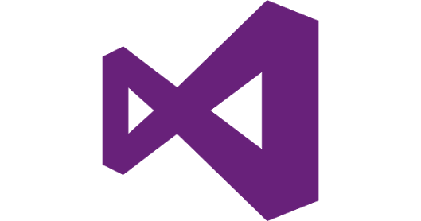

Anders Hejlsberg (dezembro de 1960) é um engenheiro de software dinamarquês que ganhou prestígio pelo desenvolvimento do Delphi e Turbo Pascal na Borland e a plataforma .NET após ter migrado para a Microsoft.
Biografia
Anders Heijsberg nasceu em Copenhagen, Dinamarca.
Graduou-se na Universidade Técnica da
Dinamarca. Em 1980, Hejlsberg escreveu compiladores para a empresa Nascon Microcomputer,
onde desenvolveu o compilador de Pascal, Blue Label Pascal.
Quando trabalhou na Borland de 1989 até 1996, desenvolveu o Turbo Pascal e Delphi.
Virou engenheiro chefe da Borland, porém a deixou em 1996.
Em 1996, deixou a Borland e foi para a Microsoft.
Sua primeira criação foi a linguagem J++.
Em 1996, deixou a Borland e foi para a Microsoft.
Sua primeira criação foi a linguagem J++.
Ganhou muito reconhecimento pelo desenvolvimento
da linguagem C# em 2000.
Pode-se dizer que foi o principal desenvolvedor da plataforma
.NET.
Lançou o livro The C# Programming Language (A linguagem de programação C#) que já está na
quarta edição e foi publicado em 9 de julho de 2006.
Programa criado por Heijsberg

Microsoft Visual Studio é um ambiente de desenvolvimento integrado (IDE) da Microsoft para
desenvolvimento de software especialmente dedicado ao .NET Framework e às linguagens Visual
Basic (VB), C, C++, C# (C Sharp) e J# (J Sharp).
Na pagina "Progrmas usados para fazer C#", temos o link para baixar o Visual Studio